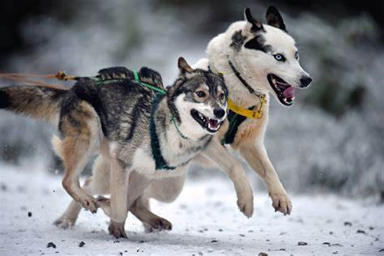

Al dia de hoy
El husky siberiano originalmente fue criado por la tribu chukchi, en la que se utilizaba como perro de compañía, para pastorear a los ciervos, tirar de los trineos y mantener calientes a los niños; en la actualidad se encuentra en muy diversas zonas del mundo.
Y es utilizado para exposiciones o show, lineas de trabajo o carreras de trineo de velocidad dependiendo sus caracteristicas
Husky Exhibicion
Las características físicas del husky siberiano tipo show, generalmente, son de huesos pesados, espalda corta, de pecho grueso y patas cortas, es decir, una parte superior corta y casi sin “pastern” (codo y metacarpo). La caja torácica (torax) del husky, en su ubicación mas baja y profunda, se sitúa debajo de los codos (imagen superior), lo que puede dificultar la libertad de movimientos con el arnés. La angulación es insuficiente tanto en la parte trasera como en la delantera.

Siberian Husky tipo trabajo y estándar de raza
El husky siberiano de tipo lineas de trabajo y/o estándar de raza, es una “versión” de rasgos medios, mas proporcionados, buscando un poco menos la espectacularidad en el ring (concursos caninos) y un poco mas la función de trabajo para la que el siberian husky fue creado, trabajar tirando de trineos.
Esta variedad, es la mas común en los tipos de huskies, siendo el objetivo de muchos criadores y mushers de razas puras ( en este caso el husky siberiano) teniendo como referencia el estándar oficial de raza.

Husky Siberiano tipo de carreras de velocidad
El husky siberiano del tipo carreras de velocidad o sprint, es el menos común entre los huskies, principalmente los encontraremos en mushers y criadores que compitan en carreras de corta distancia con sus perros. Ya sea tirando de trineos o mushing, carts (para modalidad en tierra) o en los deportes como canicross y bikejoring a nivel competición.
Husky Siberiano como perro domestico
"SI POSEES UN HUSKY SIBERIANO O PIENSAS ADOPTAR O COMPRAR UNO, DE SEGURO ESTE DIVERTIDO PERRO ALEGRARÁ TU HOGAR. PERO TIENES QUE CUIDARLO MUY BIEN, Y DEDICARLE MUCHO TIEMPO. ASÍ, VIVIRÁ MUCHO MÁS TIEMPO DE FORMA EXCELENTE Y ALEGRE"
Hay mucho más, y profundizar en todos los aspectos relacionados con una determinada raza es fundamental para evitar sorpresas desagradables el día de mañana.
Una buena investigación sobre la raza que pretende adoptar es un verdadero deber para los propietarios que buscan al próximo mejor amigo.
Los perros esquimales siberianos en realidad no son una raza adecuada para todos: requieren experiencia, conocimiento y un profundo conocimiento comprensión de esta raza, además de la de los perros en general, o existe el riesgo de tener grandes problemas de convivencia.
Es una lástima que muchos perros esquimales terminen como vagabundos, sean abandonados en refugios o, en el peor de los casos, abandonados o maltratados. El conocimiento es, en última instancia, poder antes de adoptar uno de estos hermosos animales.
Comportamiento
En cuanto a su manera de comportarse hay que destacar lo juguetones, cariñosos y leales que son estos perros. Necesitan juego dentro y fuera de casa constantemente ya que tienden a aburrirse con gran facilidad.
Los Huskies son muy activos y siempre están en alerta. Son las mascotas perfectas e ideales que siempre buscan hacer nuevos amigos.
Otra característica en su comportamiento, que viene del lobo, es que disfrutan escarbando. Este instinto se debe a cuando tenían que escarbar en la nieve para aguantar los temporales tan adversos. De esa manera se mantenían más calientes. Por eso hay que dejarles preparado un sitio para que puedan escarbar sin destrozarnos mucho nuestro jardín.
Relacion con otros perros
Suelen llevarse bien con otros perros aunque no es fácil que lo intimiden. Prefieren la convivencia de otros perros de su misma especie. Así que es bueno tener otro Husky Siberiano en casa de querer otra mascota. Con una buena socialización se adaptarán rápidamente a la convivencia con cualquier mascota. Les encantará jugar con ellas.
Estos perros son muy felices cuando viven en jauría o con varios animales. Por eso sienten la necesidad de mostrar quién es el dominante o el macho «alfa». Aunque sólo hubiera dos perros, prevalecería uno por encima de otro siempre.

Relacion con los extraños
Relación con los extraños
Con los extraños se muestran desinteresados y nunca se comportará de un modo agresivo. Aunque no los consideran dentro de su entorno de confianza y mantengan las distancias, los recibirán cariñosamente. A veces pueden llegar a saludarlos con excesiva efusividad.
Por ser una raza tan afectuosa, no son buenos para la protección de intrusos en nuestro hogar. Ni siquiera ladrará al verlos, sino todo lo contrario, se tirará a lamerles y a besarles. Por eso, no es un buen «perro vigilante».
Relacion con la familia
Les gusta estar junto a la familia aunque son muy independientes y a veces un poco testarudos. Al igual que les pasa con el resto de animales, tenemos que enseñarles que nosotros somos el macho alfa. Si ellos se creen que son el macho dominante tomarán las riendas y nos costará educarlo correctamente.
Tanto con el amo como con el resto de la familia se adaptarán bien siendo cariñosos y leales a todos. Se integrarán desde el primer momento al hogar y a su entorno familiar. Esto se debe a que siempre estuvieron muy unidos a las mujeres y niños de las tribus Siberianas.

Relacion con los niños
Con los niños en general se lleva bien siendo bastante tolerante con ellos. Por su paciencia y cordialidad pueden estar tanto con niños grandes como con los más pequeños de la casa.
Pueden pasar las horas tranquilamente juntos que estarán jugando y divirtiéndose hasta caer rendidos. Los mantendrán a salvo de cualquier situación aunque, para ello, expongan su integridad física y su propia vida.
Siempre que no se traspasen los límites entre los dos se convertirán en unos grandísimos amigos para toda la vida.